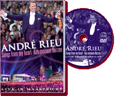

|
Live In Maastricht - Songs From My Heart (2005) - 175 Minutes
|
 |
|
Revisit André Rieu’s spectacular
midsummer night concerts in the Vrijthof square by
watching this fabulous DVD. With unique, spectacular
light shows and unforgettable performances by our
soloists Suzan, Carmen and Carla and the Platinum
Tenors! And last but not least, a guest appearance from
our very own, the one and only Benny Neyman from
Maastricht! |
Where to buy?
|
|
DVD Tracklist
- Carmen Ouvertüre (Carmen overture)
- Fliegermarsch (Aviator’s March)
- Du bist mit Gold nicht zu bezahlen (You’re worth
your weight in gold)
- Viljalied (Song of Vilja)
- Heut’ ist der schönste Tag
- Ach ich hab’ in meinem Herzen
- Concierto de Aranjuez
- Es läuten die Glocken von Limburg (Swinging
Bells of Limburg)
- Funiculi Funicula
- Im Weißen Rössl (The White Horse Inn)
- Second Waltz
- Chiantilied (Chianti Song)
- Maastrichter Hymne (Maastricht Anthem)
- Radetzkymarsch (Radetzky March)
- Ob blond, ob braun
- I could have danced all night
- With a little bit of luck
- Die Juliska aus Budapest (Juliska from Budapest)
- Memory
- Als flotter Geist (A bright young man)
- Toselli Serenade
- Libiamo
- La donna è mobile
- Auld lang syne
- Ode an Maastricht (Ode to Maastricht)
- Einzugsmarsch (Entry March)
- Guten Abend gut’ Nacht (Lullaby)
- Maastricht, Stadt der fröhlichen Sänger
(Maastricht, city of jolly singers)
|
|